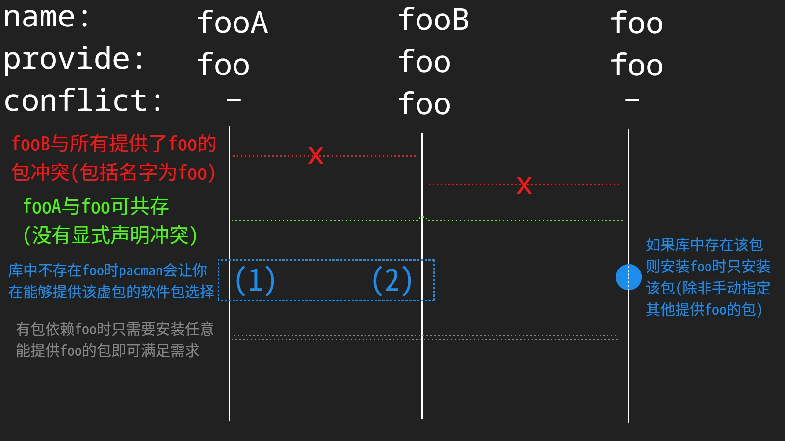

Archlinux笔记
Table of Contents
1. 前言
写这玩意用于记录点较为有用的但是又不一定常用的问题，可以类比成FAQ
2. 了解关于archlinux的信息
- 普通新闻
建议安装一个RSS阅读器，然后订阅archlinuxcn的RSS新闻，官方新闻会搬运且翻译，另外会有一些独有的新闻信息。 软件包在仓库的变动
有时候pacman更新更着更着发现有个软件包“消失了”，变成了需要从aur下载了，就可以根据下面的方法进行消息查证和原因查找这里举几个我碰见过的例子哈。例如说我2025.3.29刚从extra-any库下载了 arc-gtk-theme包，三天之内那个包就在 这个提交中被删除了。还有我2025.06.13装的 yutto，在2025.07.21的 这个提交就被视作孤立包被删除了。我自己搓manim的PKGBUILD有个依赖叫python-skia-pathops，但是刚搓好没多久这个依赖就和yutto一起被删除了。
对于官方仓库的软件包变动可以访问archlinux软件仓库的git仓库： 官方仓库链接， github镜像，建议访问官方而非github，一般github更慢。这两个链接只能对软件仓库的变动进行查证，如果需要查找变动原因则需要访问 这个链接。
关于查找软件包变动记录的方法：去git仓库然后搜索想找的软件名，选择搜索commit，按照时间排序，就可以看到那个软件包是不是被 Removed 了。当然如果包还在那么在搜索code的时候应该会有搜索结果的。
当然对于社区仓库archlinuxcn也是同理，git仓库链接： 只有github的链接
和官方仓库不同的是，archlinuxcn的提交有一个可追踪的因果链。根据Search Commit 找到软件包被移除的commit后在提交的说明中一般会有一个导致包被移除的关于弃置请求的issue，里面又会有真正导致弃置的原因的issue链接，查证比较方便。
以上面的yutto和python-skia-pathops为例，追踪下来发现事件链如下：
原包维护者请求卸任 -> 管理员处理并向仓库提交弃置请求issue -> 审核同意 -> 管理员移除失去维护者的孤儿包
上述事件链也是一个标准的处理流程
而arc-gtk-theme挺奇妙，事件链如下：
archlinuxcn有人维护 -> 有issue说官方有了包 -> 原维护者请求弃置(2022.11.21) -> 官方将包移除(2025.04.01)
官方的仓库没有相关事件链可供追踪(顺带吐槽下增加包的commit都是"Update"而非 "Add")，故包被删除的原因未知
技术知识
多上维基查查，要是找不到可以尝试去英文维基翻翻2025.10.05回来吐槽：没有听从自己的忠告去翻gtk的中文维基找半天也没找到问题解决办法，最后一看内容同步于2022-04-19，属实是自己把自己坑惨了。
3. 打包软件包
需要使用makepkg工具（在pacman内），标准的PKGBUILD文件在/usr/share/pacman/目录下，格式手册可通过 man PKGBUILD 查看（其余的自查维基）
提供与冲突
在PKGBUILD中指定 provides 作为该包提供的“虚包”（功能），软件包本身的名称会默认作为其中的一部分。由此可以通过指定provides里的名称安装该包。如果有多个软件包声明提供了某功能则pacman会在安装时询问使用哪个。（但如果有个软件包就叫那个名字，那么pacman只会安装那个包，不会寻找provide这个名的包）如果没有在 conflect 中指明自己provide的某个功能，则不会触发依赖检查的冲突（意思是认为只要不说就默认提供相同功能的包是可以共存的），但只要一在conflect中指定了provide的名字，那么所有在provide中带有那个名的包都会触发冲突。
作图解释如下：

3.1. 不规范但懒人的打包
由于有些aur软件可能会用到许多arch官方仓库没有的依赖包，这些包的源文件多从github 上下载，所以说就很令人烦恼。
但是，像python这种一堆第三方依赖的就有一个办法可以尝试解决这个问题：自己写一个利用pip镜像下载依赖包并一起打包安装的PKGBUILD。当然这样的包不正规，但够懒人，也够快。大致的框架如下：
depends=( "......" # arch官方仓库和archlinuxcn仓库的依赖 ) makedepends=( "base-devel" "python-pip" "python-build" "python-installer" "python-setuptools" "python-wheel" ) provides=( "..." # 这里决定内置什么python包 ) # 将provides的值拷一份给conflicts conflicts=("${provides[@]}") build() { # 构建函数(用pip下载) pip download --no-deps -i https://pypi.tuna.tsinghua.edu.cn/simple ${provides[*]#python-} if [[ ! -d output ]]; then mkdir output fi find ./ -maxdepth 1 -type f -name "*.tar.gz" -exec tar xzf \{\} -C output \; for dir in output/* ;do python -m build -w -o . $dir done if [[ ! -d root ]]; then mkdir root fi find ./ -maxdepth 1 -type f -name "*.whl" -exec python -m installer --destdir="root" \{\} \; } package() { mv root/* $pkgdir }
总之就是官方有的就作依赖，没有的就用pip作provide。而pip能用二进制包就用二进制包，没有二进制包的就下载下来用python-build构建
当然说不定还会有用于为python包生成PKGBUILD文件的软件出现，但至少目前我还没有碰到过。
4. steam商店无法联网问题(实际上是DNS问题)
如果出现：
- steam商店无法联网
- steam云服务正常
- 浏览器可以正常打开steam商店
那么有可能你的dns没有配置好导致只有神奇的steam客户端无法联网steam商店，此时，可以尝试运行
sudo ln -sf /run/systemd/resolve/stub-resolv.conf /etc/resolv.conf
4.1. 更多DNS设置
在dhcpcd+iwd且不使用NetworkManager服务时，通过修改 /etc/dhcpcd.conf 文件设定 DNS服务，使用 sudo systemctl restart systemd-resolved.service 重启生效
5. obs的编码问题
- 我的HEVC编码器哪去了？
如果是intel的CPU/GPU请确保安装了intel-media-driver包，并重启obs启用硬编解码
6. 老旧网卡总是重复断连
由于该节内容方法来源来自ai，具体原理仍不清楚，待日后查证纠正
使用 journalctl -f 进行日志实时显示，然后另一边用iwd等网络管理器进行操作，观察日志输出。如果发现有大量类似于 invalid HE capabilities for XX:XX:XX:XX:XX:XX 的输出，尝试编辑（或者创建） /etc/iwd/main.conf 文件，追加以下内容:
[General] DisableVHT=false [Settings] DisableHE=true